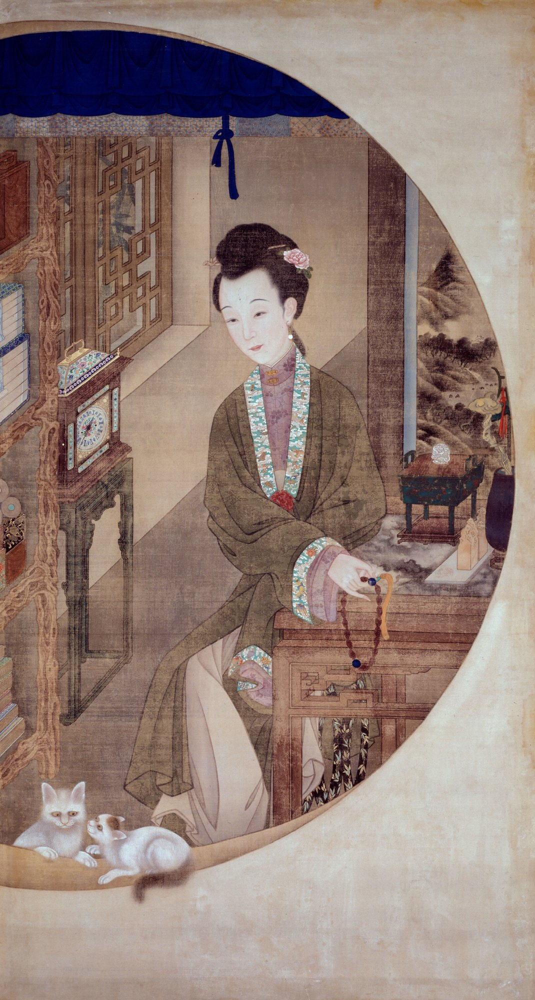
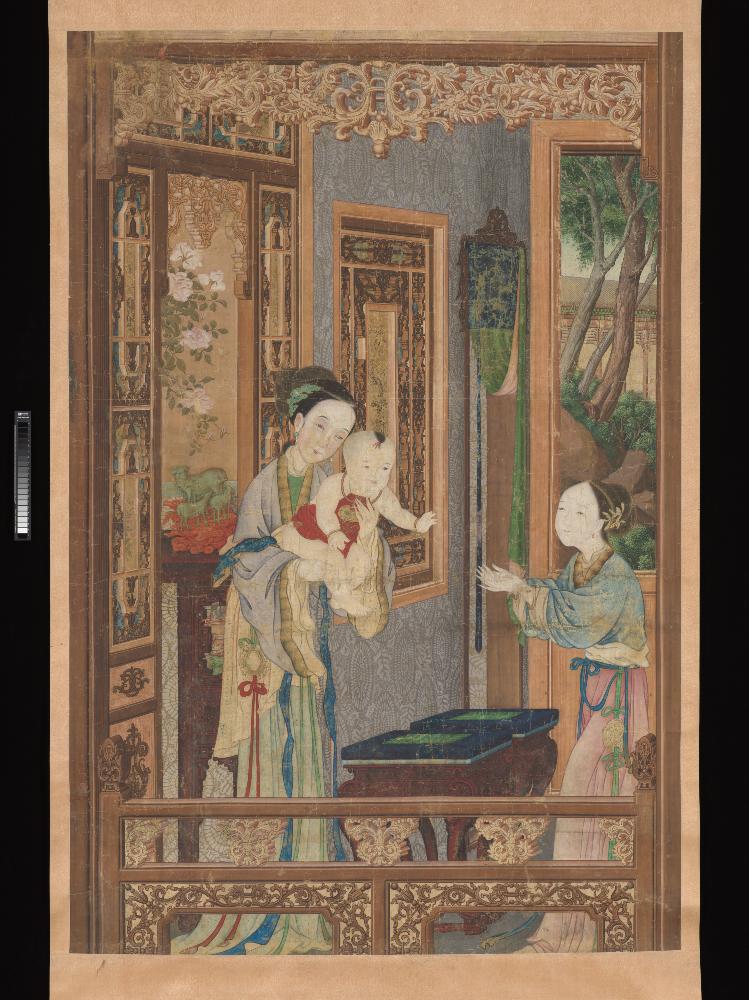
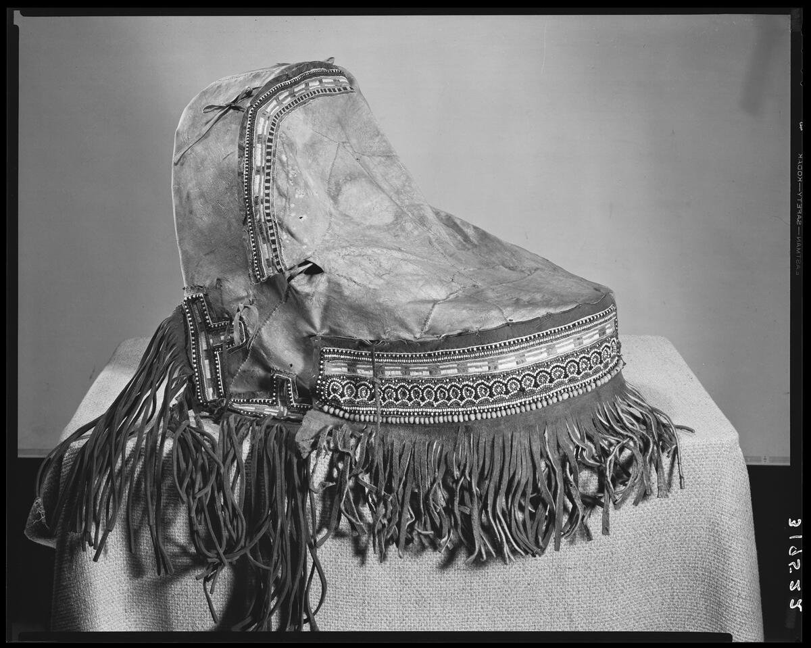
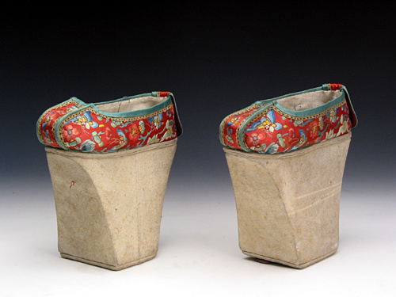
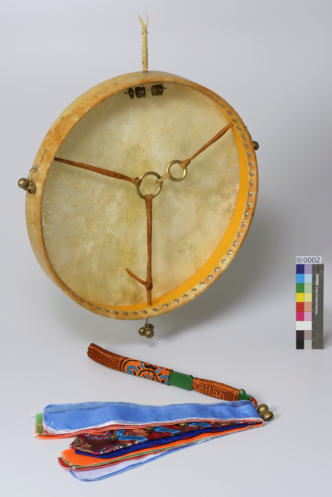
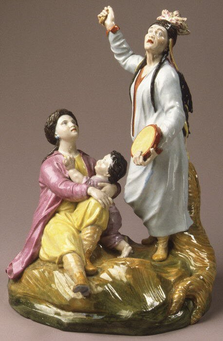
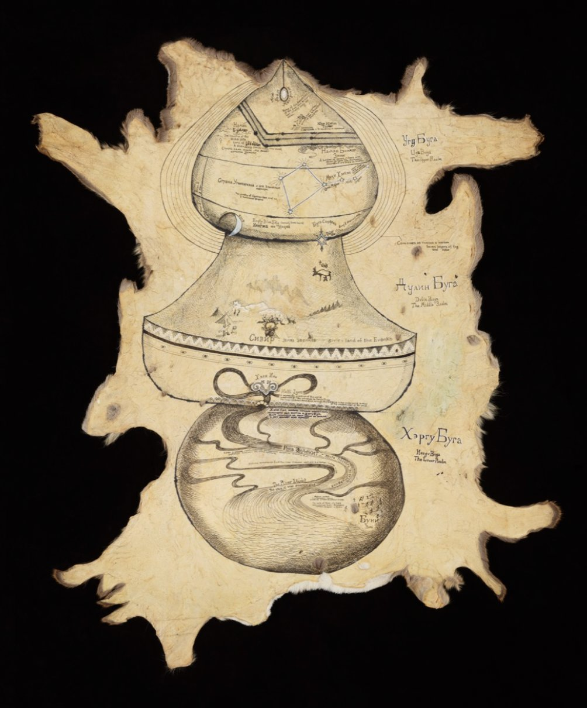
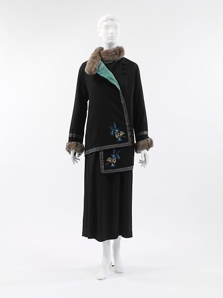
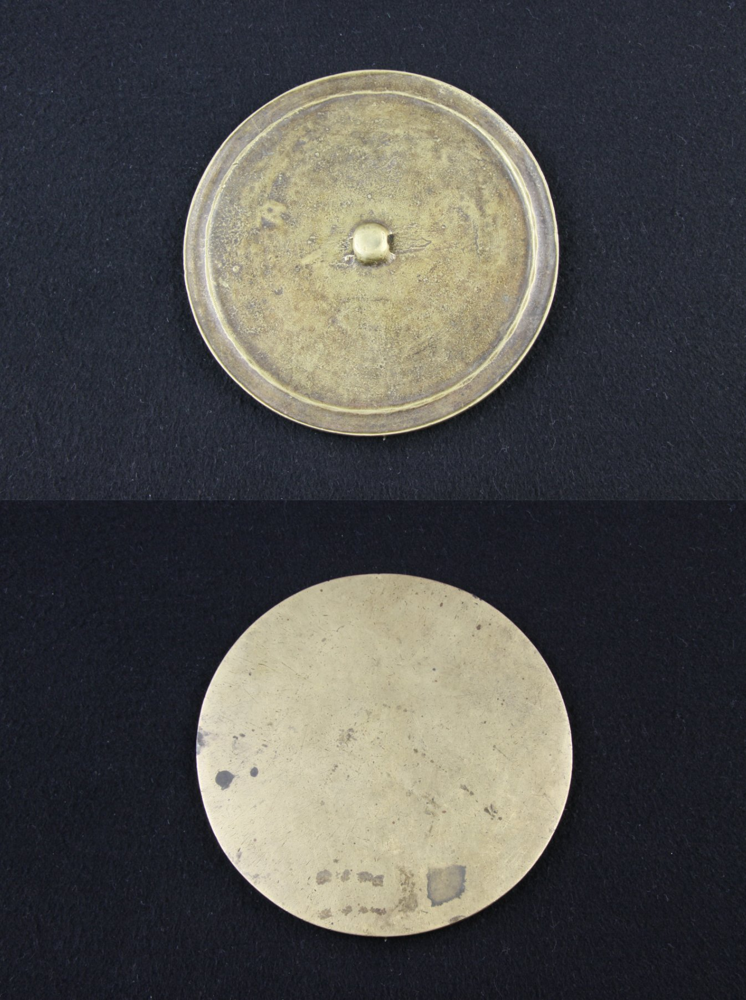

click anywhere to close
Digital Gallery
Evenki and Manchurian women — erased by empires, present in their own terms.
This exhibition examines how womanhood in Evenki, Manchu, and other indigenous cultures of Northeastern Asia is portrayed. Across most dimensions of history, these women were written without identities, flattened into a singular representation, and exploited for economic or political gains. Another side of the exhibition showcases the diverse characteristics and perspectives that each woman possesses. The disparity between what is written extensively and what is almost never written about highlights the overwhelming disregard of women's status in all fields — which is only just beginning to change.
A key aspect that this exhibition focuses on is how religion, Shamanism as well as other indigenous beliefs, interacts with these women. Religious practice was a major source of women's authority and also the reason they were targeted — both for being religious and for having authority. Beliefs were reduced to superstitions, and then commodified as cultural heritage, used mainly for profit rather than actual care.
Through fifteen artifacts spanning from paintings to contemporary art, this exhibition aims not to tell a single chronological narrative. Instead, it follows an ongoing thread of history, in which stories are simultaneously written without the true roles of women — and in which women have written themselves into the story, but always at a cost.









— end of exhibition —
continue scrolling for sources
scroll to navigate →
↑ Overviewclick anywhere to close
Borisova, Izabella Z. "Traditional Clothing as an Indicator of Self-Identification and a Factor of Cultural Preservation in the Context of Industrial Development of Ancestral Lands (Using the Example of the Evenki of Syuldukar)." Journal of Siberian Federal University. Humanities & Social Sciences, vol. 18, no. 5, 2025, pp. 1051–1071. elib.sfu-kras.ru/bitstream/handle/2311/156133/20_Borisova.pdf.
Cai Chengjie, director. The Widowed Witch [北方一片苍茫]. 2018. International Film Festival Rotterdam, iffr.com/en/iffr/2018/films/the-widowed-witch.
chineseposters.net. The Witch Undergoes a Transformation [巫婆快转变]. Tian Zuoliang, 1951. PC-1951-s-005.
George Mason University Libraries, Special Collections Research Center. War Damage. Japanese Invasion of Manchuria Photograph Collection. Record ID: C0200B01F67. images.gmu.edu.
Gleizer, Anya. Map Representing Evenki World View and Cosmology. 2019. Ink on reindeer hide. Pitt Rivers Museum, University of Oxford. www.prm.ox.ac.uk/event/wandering-in-other-worlds.
Gu Tao, director. The Opaque God [神翳]. 2011. Chinese Independent Film Archive, www.chinaindiefilm.org/films/the-opaque-god/.
Hou Yumei (侯玉梅). Offering to the Yellow Weasel Spirit [供奉黃仙]. Paper-cut. papercutlady.com.
Jilin Manchu Museum (吉林市满族博物馆). Bronze Mirror [铜镜]. Republican era. www.jlsmzbwg.org.cn/article/index/id/176.
Lee Boltin, photographer. Evenki (Tungus) Cradle with Decoration and Fringe. 1944. American Museum of Natural History, New York. digitalcollections.amnh.org.
Loewentheil Photography of China Collection. Portrait of a Woman Carrying a Child. 1860s. Hand-colored albumen silver print.
The Metropolitan Museum of Art. Female Shaman. Imperial Porcelain Manufactory, St. Petersburg, c. 1780–1800. www.metmuseum.org/art/collection/search/41637.
The Metropolitan Museum of Art. Interior with Woman, Child and Nurse. Qing Dynasty, late 18th–early 19th century. www.metmuseum.org/art/collection/search/53551.
The Metropolitan Museum of Art. "Steppe." Paul Poiret, 1912. www.metmuseum.org/art/collection/search/100001.
Museum of the Institute of Ethnology, Academia Sinica. Daur Shaman Drum [達斡爾族薩滿鼓]. Object ID: 10059. Open Museum, openmuseum.tw/muse/digi_object/b32eccb4d3e983026758927e66b9a65a.
Palace Museum, Beijing. Fingering Prayer Beads While Watching Cats [捻珠观猫]. Qing Dynasty, c. 1732. www.dpm.org.cn/collection/paint/231766.html.
Phoenix Television (凤凰卫视). Siqingua Shaman documentary segment. culture.ifeng.com/wenhuadaguanyuan/detail_2011_10/31/10286416_1.shtml.
Shenyang Palace Museum. Qing Red Satin Embroidered Flower-Pot Shoes [清红缎彩绣花高底鞋]. Qing Dynasty. www.sypm.org.cn/product_1/1161355419829948416.html.